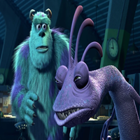
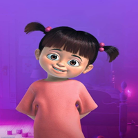
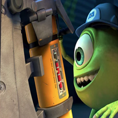
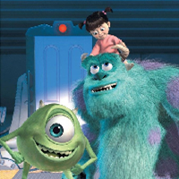

História do Filme
Vamos descobrir sobre os filmes
Monstros S.A. (2001) – O filme que transformou o medo em magia
Lançado em 2001, Monstros S.A. é uma das obras mais criativas e emocionantes já produzidas pela Pixar. No coração da movimentada Monstrópolis, os monstros trabalham em uma fábrica muito especial: lá, a energia da cidade é gerada a partir dos gritos das crianças do mundo humano. Entre milhões de portas, sustos planejados e uma rotina totalmente inesperada, acompanhamos a vida de James P. “Sulley” Sullivan e de seu melhor amigo, Mike Wazowski, dois funcionários dedicados da maior fábrica de sustos do planeta.
A história muda completamente quando uma garotinha humana — a adorável Boo — atravessa uma dessas portas e invade o mundo dos monstros. Sua presença causa caos, medo e confusão, já que os monstros acreditam que crianças são tóxicas. Mas Boo também revela algo muito maior: uma relação espontânea e cheia de afeto capaz de desafiar regras e transformar o funcionamento de toda a cidade.
Com uma mistura perfeita de humor, emoção e visuais inesquecíveis, Monstros S.A. não é apenas um filme sobre monstros trabalhando. É uma história sobre amizade, mudança, coragem e a descoberta de que nem sempre aquilo que nos ensinaram a temer é realmente perigoso. Um clássico que continua a encantar gerações — e que abre as portas para um universo inteiramente novo.
Universidade Monstros (2013) – Onde tudo começou
Mais de uma década após conquistar o público, a Pixar voltou à Monstrópolis para mostrar um capítulo muito especial: o passado. Em Universidade Monstros (2013), viajamos para os anos de juventude de Mike e Sulley, muito antes de se tornarem a dupla lendária da Monstros S.A.
Aqui, Mike chega cheio de sonhos à Universidade Monstros (UM), determinado a provar que pode ser um grande assustador — mesmo sem ter a aparência mais assustadora da turma. Sulley, por outro lado, é naturalmente talentoso, filho de uma família famosa e acostumado a ser o centro das atenções. Isso cria uma rivalidade instantânea entre os dois, levando a discussões, competições e situações hilárias.
Mas é através dos desafios, das equipes improváveis, das noites de estudo (e de sustos), das provas impossíveis e dos erros que ambos cometem, que nasce uma das amizades mais fortes e improváveis do universo Pixar. O filme revela que o sucesso não vem apenas do talento, e que esforço e determinação podem ser mais importantes do que qualquer dom natural.
Com um clima universitário colorido, personagens inesquecíveis e uma mensagem poderosa sobre autoconhecimento e persistência, Universidade Monstros complementa brilhantemente o primeiro filme e ajuda o público a entender como uma dupla tão diferente se tornou inseparável.
Universo
Como funciona o mundo dos monstros
-

A Energia dos Gritos
Antes dos acontecimentos do filme, o mundo dos monstros dependia totalmente dos gritos das crianças para gerar energia elétrica. A empresa Monstros S.A. foi criada para coletar esses gritos de forma organizada — por meio de assustadores profissionais que entravam nos quartos das crianças à noite.
-

O Reinado dos Assustadores
Durante esse período, os monstros acreditavam que as crianças eram tóxicas e perigosas, e apenas os mais corajosos se tornavam “assustadores”. Sulley e Randall competiam para ver quem coletava mais gritos, e Mike Wazowski sempre apoiava o amigo em suas missões noturnas.
-

A Chegada de Boo
Tudo muda quando Boo, uma garotinha humana, entra acidentalmente no mundo dos monstros. Isso abala todas as crenças sobre as crianças e revela que, na verdade, o riso delas é uma fonte de energia muito mais poderosa e segura do que o medo.
-

Uma Nova Era de Risadas
Após os eventos principais, a Monstros S.A. é reformulada: Sulley assume o comando e transforma a empresa em uma fábrica de risadas, substituindo o medo pela alegria. O mundo dos monstros entra em uma era mais feliz, sustentável e cheia de empatia.
-

Curiosidades
Fatos incríveis sobre o filme
Monstros S.A. foi o quarto longa-metragem da Pixar, lançado em 2001, e levou quase *quatro anos para ser produzido!
A relação entre Sulley e Boo foi inspirada na ligação entre pais e filhos, mostrando que até monstros têm sentimentos.

A cena das portas foi uma das mais complexas da Pixar, com mais de 2,5 milhões de portas animadas digitalmente!
Mensagem e Moral
Monstros S.A. nos ensina que o medo pode ser transformado em alegria.
O filme fala sobre amizade, empatia e mudança — mostrando que cuidar dos outros é o verdadeiro
sentido de ser grande.


{kind=link}
{kind=link}